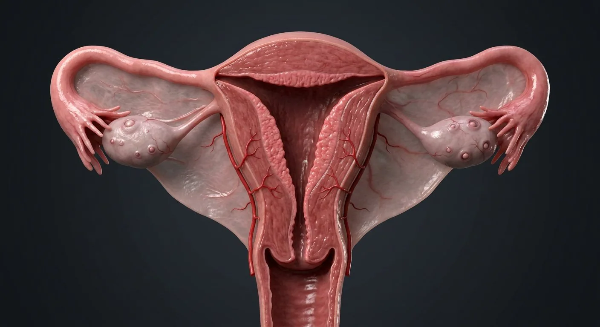

How this part of the body works
Each cycle, FSH recruits a follicle that secretes oestradiol and builds the endometrium; the LH surge triggers ovulation at a variable cycle day (often about 14 days before the next period), and the corpus luteum then secretes progesterone to make the endometrium secretory. If fertilisation does not occur the corpus luteum regresses, progesterone falls and menstruation follows. Fertilisation normally happens in the ampulla of the uterine tube, and the embryo reaches the uterus after 3–4 days. The cervix, with its mucus plug, and the vaginal microbiome form the defence against ascending infection.
Read the anatomy, part by part
These 9 structures describe anatomy related to the chapter’s regional illustration. Each entry separates location, function and a clinical point.
Fundus & body
The domed fundus above the tubal openings and the tapering body, of smooth muscle (myometrium) lined by endometrium.
What it doesHouses and nourishes a pregnancy; the myometrium generates labour.
Clinical connectionFibroids (leiomyomas) arise in the myometrium and cause heavy bleeding and pressure symptoms.
Endometrium
A functional layer of glands and stroma that proliferates under oestrogen and becomes secretory under progesterone, plus a permanent basal layer.
What it doesSite of implantation; sheds each cycle if no embryo implants.
Clinical connectionEctopic endometrium (endometriosis) causes cyclical pain and infertility; unopposed oestrogen drives hyperplasia and carcinoma.
Cervix
The fibrous neck projecting into the vagina, with an endocervical canal of mucus-secreting columnar epithelium and a squamous ectocervix.
What it doesKeeps pregnancy in and microbes out; dilates 10 cm in labour.
Clinical connectionThe squamocolumnar junction is where cervical cancer begins — the target of smear tests and HPV vaccination.
Vagina
A fibromuscular canal lined by glycogen-rich stratified squamous epithelium, angled back over the levator plate.
What it doesBirth canal, menstrual outlet and copulatory organ; lactobacilli keep pH ~4.
Clinical connectionThe acidic pH protects against infection; antibiotics and oestrogen loss can allow candidiasis.
Uterine tube
A 10 cm ciliated duct with interstitial, isthmic, ampullary and infundibular parts.
What it doesCaptures the oocyte, is the site of fertilisation (ampulla) and transports the embryo by ciliary beat and peristalsis.
Clinical connectionDamage from infection (PID) or surgery is the main cause of ectopic pregnancy and tubal infertility.
Fimbriae
Finger-like projections around the tubal opening, one (fimbria ovarica) attached to the ovary.
What it doesSweep the oocyte into the tube at ovulation.
Clinical connectionFimbrial epithelium is now recognised as the origin of many "ovarian" high-grade serous cancers.
Ovary
An almond of stroma holding the follicle pool, covered by germinal epithelium and suspended by the mesovarium.
What it doesOvulation and secretion of oestradiol, progesterone and inhibin.
Clinical connectionPolycystic ovaries show peripheral follicles with anovulation; epithelial tumours are the silent gynaecological cancer.
Follicles & corpus luteum
Primordial → primary → antral → dominant (Graafian) follicle; after ovulation the remnant becomes the progesterone-secreting corpus luteum, then corpus albicans.
What it doesProduces the oocyte and the cycle's hormones.
Clinical connectionA follicle that fails to rupture forms a follicular cyst; a persistent luteum forms a corpus luteum cyst.
Broad & suspensory ligaments
Peritoneal folds (broad, round, ovarian, suspensory) carrying the tubes, vessels and ureters.
What it doesSuspend the uterus and convey its vessels.
Clinical connectionThe ureter runs under the uterine artery ("water under the bridge") — the classic injury point in hysterectomy.
Deeper structures and tissue layers
These 11 additional entries give anatomical context. They are deliberately not assigned a photographic pin on the regional image.
Related deep chapters: Uterus — layers & cavity, Cervix — transformation zone, Ovary & uterine tube, Vagina — walls & fornices, Vulva — external genital anatomy.
Fundus
Dome above the two tubal openings.
What it doesExpands in pregnancy; fundal position is an obstetric landmark.
Clinical connectionFundal height is a rough gestational growth marker.
Ectocervix
Part of cervix visible at the vaginal vault.
What it doesCovered by nonkeratinizing stratified squamous epithelium.
Clinical connectionVisual examination and directed biopsy sample this surface.
Ovarian cortex
Outer ovarian zone with follicles at several stages.
What it doesHouses the oocyte reserve.
Clinical connectionCortical tissue is considered in fertility-preserving surgery.
Vaginal lumen
Potential space whose walls normally lie against one another.
What it doesPassage for menstrual flow, intercourse and birth.
Clinical connectionDistensibility varies; do not interpret the lumen as a permanently open tube.
Mons pubis
Fatty pad over pubic symphysis.
What it doesCushions pubic bone.
Clinical connectionNormal hair pattern and contour vary widely.
Uterine body
Main muscular region between fundus and isthmus.
What it doesHouses uterine cavity and contracts during labor.
Clinical connectionFibroids often arise here and may distort the cavity.
Endocervical canal
Canal linking internal to external os.
What it doesConducts sperm and menstrual flow; glandular mucus changes cyclically.
Clinical connectionStenosis may obstruct sampling or menstrual outflow.
Ovarian medulla
Central vascular stromal zone.
What it doesSupports vessels, nerves and the hilum.
Clinical connectionOvarian pedicle bleeding arises at the hilum.
Anterior vaginal wall
Shorter wall adjoining bladder base and urethra.
What it doesProvides anterior pelvic support.
Clinical connectionAnterior compartment weakness may be associated with cystocele.
Labia majora
Outer skin folds containing fat and connective tissue.
What it doesProtect the vestibule and inner folds.
Clinical connectionVulvar lymph largely drains to superficial inguinal nodes.
Uterine cornua
Upper lateral junctions where uterine tubes enter.
What it doesCommunicate with intramural tube segments.
Clinical connectionInterstitial ectopic pregnancy arises near the cornu.
Five questions about Female reproductive system
Short answers grounded in the structures described above. Use the illustrated guide for anatomical context.
What organs are included in the female reproductive system?
The system includes ovaries, uterine tubes, uterus, cervix, vagina and external genital structures. Each has distinct roles in cycles, reproduction and pelvic support.
Where does fertilization usually occur?
Fertilization most often occurs in the ampulla of a uterine tube. The resulting early embryo travels toward the uterine cavity.
What is the fundus & body?
The domed fundus above the tubal openings and the tapering body, of smooth muscle (myometrium) lined by endometrium. Function: Houses and nourishes a pregnancy; the myometrium generates labour.
Where is the cervix located?
The fibrous neck projecting into the vagina, with an endocervical canal of mucus-secreting columnar epithelium and a squamous ectocervix. Function: Keeps pregnancy in and microbes out; dilates 10 cm in labour.
What is the function of the uterine tube?
Function: Captures the oocyte, is the site of fertilisation (ampulla) and transports the embryo by ciliary beat and peristalsis. A 10 cm ciliated duct with interstitial, isthmic, ampullary and infundibular parts.
Related anatomy guides
Follow these connected structures and body systems in the illustrated atlas.
 Uterus — layers & cavityThe womb in cross-section: endometrium, junctional zone, myometrium, cavity, isthmus and the key clinical boundaries.↗
Uterus — layers & cavityThe womb in cross-section: endometrium, junctional zone, myometrium, cavity, isthmus and the key clinical boundaries.↗ Cervix — transformation zoneThe gynecology examination landmark: external os, canal, squamocolumnar junction and transformation zone in one close-up.↗
Cervix — transformation zoneThe gynecology examination landmark: external os, canal, squamocolumnar junction and transformation zone in one close-up.↗ Ovary & uterine tubeFrom follicular cortex to ampulla: the ovary, fimbriae, tubal mucosal folds and the hidden routes of fertilization.↗
Ovary & uterine tubeFrom follicular cortex to ampulla: the ovary, fimbriae, tubal mucosal folds and the hidden routes of fertilization.↗ Vagina — walls & fornicesA layered fibromuscular canal: rugae, muscularis, fornices, vestibular opening, adjacent urethra and rectum.↗
Vagina — walls & fornicesA layered fibromuscular canal: rugae, muscularis, fornices, vestibular opening, adjacent urethra and rectum.↗Further reading
General anatomy references and related source chapters for continued study. These links do not make the digital illustrations clinical images or certify every anatomical variant.
This educational page is not medical advice and has not undergone formal clinical peer review. Spotted an error? Contact the editor.
Open the realistic interactive plate, label lines, focus view and self-test.